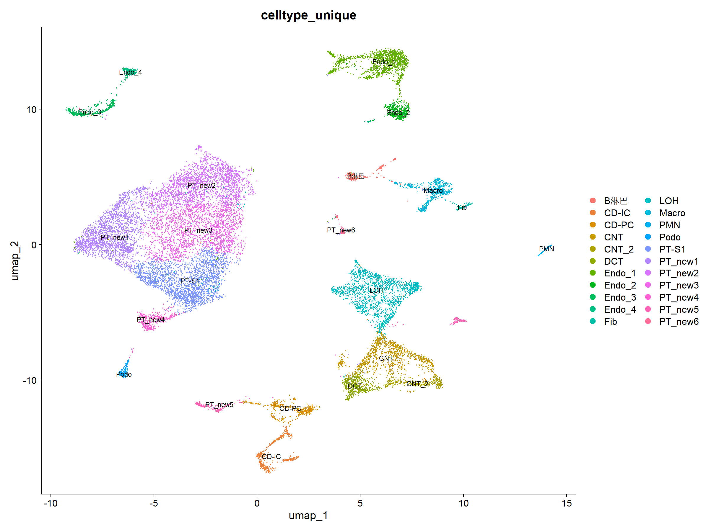
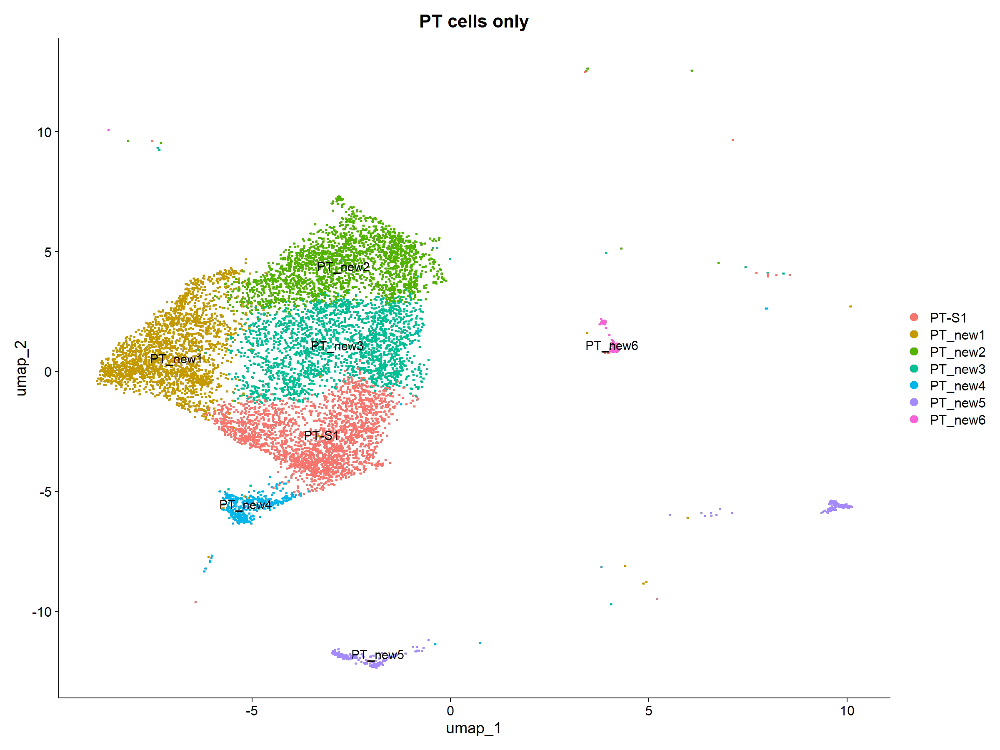
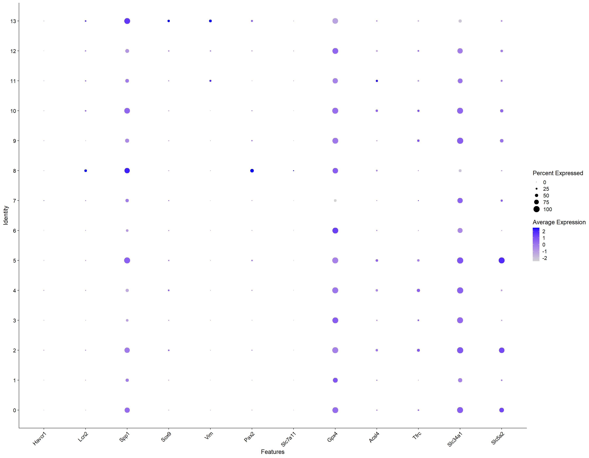
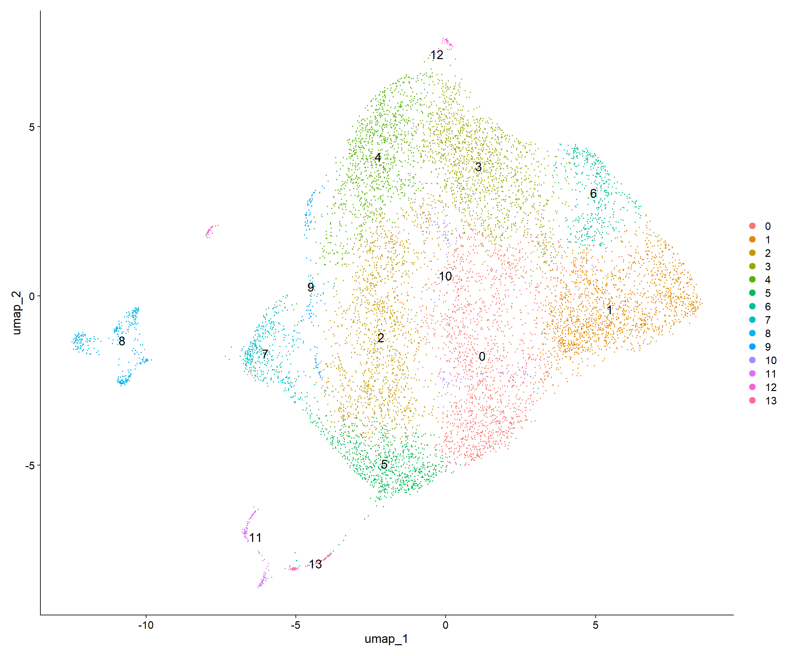
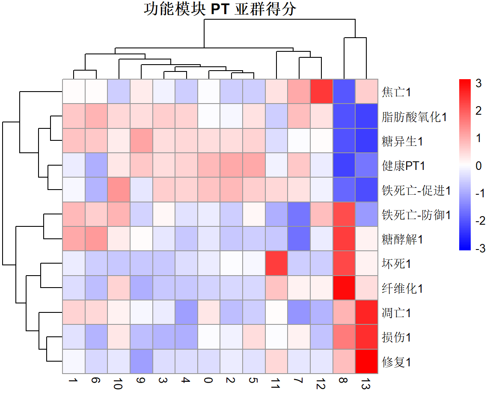
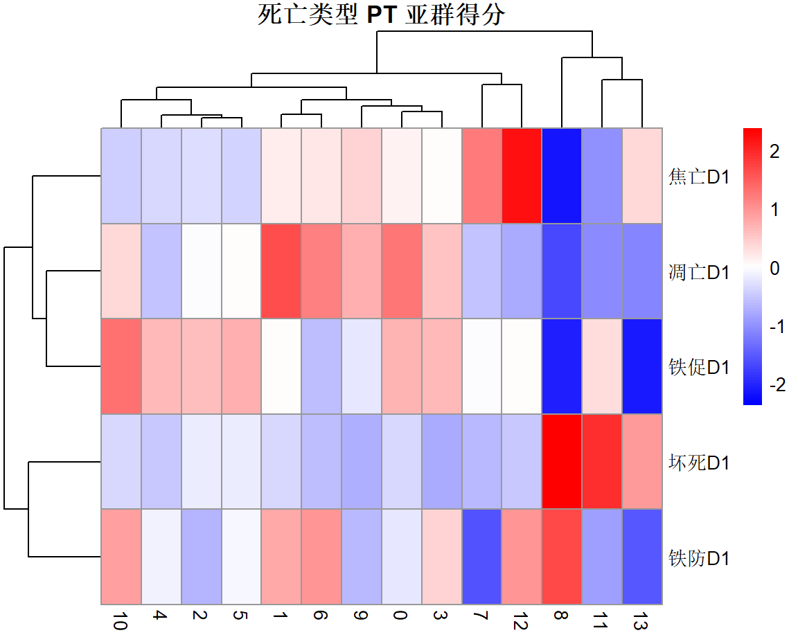
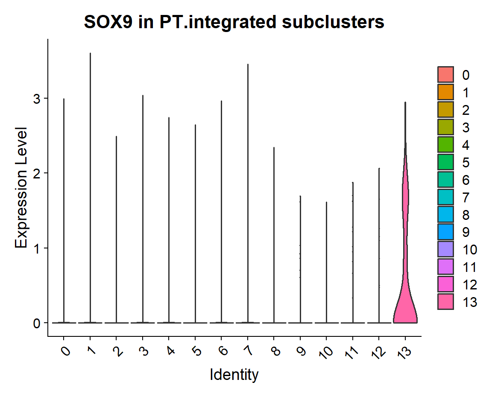

🧬 CLP 脓毒症 AKI 近端小管损伤与死亡景观
1 项目背景与设计
CLP 诱导的脓毒症 AKI 24h，近端小管（PT）细胞处于何种损伤状态？死亡程序是否已启动？以何种方式启动？
- 模型：CLP 脓毒症 vs Sham
- 时点：24h
- 样本：每组 1 个生物学样本（关键局限）
- 流程：全肾聚类 → 提取 PT → 直接打分 + 二次聚类 → 功能/死亡模块 → SOX9 验证
2 数据加载与 QC
Read10X 读取两个样本，加 --C0/--C24 后缀合并，标记 group（Sham / CLP24）。QC 采用 scater 流程：检测基因 200–9000、总 UMI 500–150k、线粒体比例 ≤55%。
| 组别 | QC 前细胞 | QC 后细胞 | 保留率 |
|---|---|---|---|
| Sham | 14,408 | 11,131 | 77.3% |
| CLP24 | 10,725 | 6,924 | 64.6% |
| 合计 | 25,133 | 18,055 | 71.8% |
3 全肾聚类与 PT 鉴定
按组拆分 → 锚点整合（dims 1:20）→ PCA（50）→ UMAP → 分辨率扫描 0–3，最终采用 res=0.5（23 簇）。用 14 组细胞类型标记物做簇身份打分。


4 全肾 UMAP 直接打分
在提取的 7 个 PT 簇（PT_UMAP1）上直接跑 12 个功能模块分，验证基因集有效性并观察粗粒度状态分离。

4.1 每簇平均得分（sc_mat）
| 簇 | 健康PT | 损伤 | 修复 | 铁死亡-防御 | 糖酵解 | 糖异生 | 脂肪酸氧化 | 状态 |
|---|---|---|---|---|---|---|---|---|
| 0 | 0.768 | 0.123 | -0.008 | 0.211 | 0.142 | 0.557 | -0.255 | 健康 |
| 1 | 0.288 | -0.012 | -0.003 | 0.295 | 0.277 | 0.613 | -0.206 | 健康·代谢活跃 |
| 2 | 0.534 | -0.114 | -0.012 | 0.238 | 0.154 | 0.528 | -0.212 | 健康 |
| 3 | 0.705 | -0.017 | -0.008 | 0.194 | 0.146 | 0.504 | -0.281 | 健康 |
| 13 | 0.617 | 0.098 | -0.005 | 0.085 | 0.031 | 0.330 | -0.195 | 早期响应 |
| 15 | -0.437 | 0.397 | 0.034 | 0.438 | 0.404 | -0.428 | -0.485 | 损伤 |
| 19 | -0.163 | 0.452 | 0.100 | 0.116 | 0.153 | -0.380 | -0.487 | 损伤 |
4.2 簇 × 组 CLP 富集（Fisher）
| 簇 | CLP 占比 | OR | p.adj | 富集方向 |
|---|---|---|---|---|
| 13 | 55.7% | 3.17 | 4.1e-27 | CLP 富集 |
| 15 | 51.5% | 2.64 | 8.9e-17 | CLP 富集 |
| 19 | 44.4% | 1.93 | 2.4e-3 | CLP 富集 |
| 0 | 27.4% | 0.87 | 1.3e-2 | Sham 富集 |
| 2 | 26.3% | 0.82 | 3.8e-4 | Sham 富集 |
| 3 | 25.0% | 0.75 | 6.3e-7 | Sham 富集 |
| 1 | 30.5% | 1.07 | 0.198 | 中性 |
5 PT 重新整合聚类
提取 7 个 PT 簇 → 按组拆分 → 重新锚点整合（dims 1:30）→ 二次聚类，最终采用 res=0.5（14 亚群，0–13）。该版本去除组间批次、细粒度解析 PT 内部状态。

5.1 亚群 × 组构成
| 簇 | 0 | 1 | 2 | 3 | 4 | 5 | 6 | 7 | 8 | 9 | 10 | 11 | 12 | 13 |
|---|---|---|---|---|---|---|---|---|---|---|---|---|---|---|
| CLP 占比 | 16.5 | 33.4 | 33.6 | 19.8 | 33.2 | 33.5 | 27.4 | 55.6 | 49.4 | 17.2 | 27.6 | 36.5 | 33.3 | 36.1 |
| Sham 占比 | 83.5 | 66.6 | 66.4 | 80.2 | 66.8 | 66.5 | 72.6 | 44.4 | 50.6 | 82.8 | 72.4 | 63.5 | 66.7 | 63.9 |
表注：数值为百分比（%）。7 号亚群 CLP 占 55.6%，是 CLP 富集度最高的亚群；8 号接近 1:1；0/3/9 被 Sham 主导。
6 功能模块分析

6.1 每亚群功能得分（关键模块）
| 簇 | 健康PT | 损伤 | 修复 | 铁死亡-防御 | 糖酵解 | 糖异生 | 脂肪酸氧化 | 身份判定 |
|---|---|---|---|---|---|---|---|---|
| 8 | -0.418 | 0.389 | 0.032 | 0.432 | 0.401 | -0.416 | -0.485 | 急性损伤·应激代偿 |
| 13 | -0.200 | 0.571 | 0.112 | 0.125 | 0.202 | -0.504 | -0.502 | 最重伤·防御崩溃 |
| 7 | 0.633 | 0.099 | -0.005 | 0.084 | 0.035 | 0.346 | -0.191 | CLP 早期响应 |
| 0–5,9,10,12 | 0.32–0.77 | ≈0 | ≈0 | 0.18–0.32 | 0.13–0.20 | 0.39–0.77 | -0.21~-0.28 | 健康 PT |
| 6 | 0.050 | -0.111 | -0.011 | 0.289 | 0.298 | 0.606 | -0.179 | 身份存疑 |
6.2 功能模块 CLP vs Sham 阳性比例（Fisher）
| 模块 | CLP 阳性 | Sham 阳性 | OR | 方向 |
|---|---|---|---|---|
| 铁死亡-防御 | 26.0% | 3.3% | 10.3 | CLP↑↑ |
| 修复 | 24.0% | 4.2% | 7.26 | CLP↑↑ |
| 损伤 | 22.8% | 4.7% | 6.01 | CLP↑↑ |
| 糖异生 | 19.7% | 6.0% | 3.87 | CLP↑ |
| 纤维化 | 18.7% | 6.4% | 3.37 | CLP↑ |
| 坏死 | 13.4% | 8.6% | 1.65 | CLP↑ |
| 糖酵解 | 14.3% | 8.2% | 1.86 | CLP↑ |
| 健康PT | 5.8% | 11.8% | 0.46 | CLP↓ |
| 凋亡 | 5.5% | 11.9% | 0.43 | CLP↓ |
| 焦亡 | 9.5% | 10.2% | 0.93 | 无差异 |
7 死亡类型分析
死亡分析限定在损伤 PT（簇 8+13）内重新打分，以损伤细胞自身为背景，避免健康细胞稀释信号。四类死亡 + 铁死亡两臂。

7.1 死亡模块均值（损伤 PT 内）
| 模块 | 簇 8 | 簇 13 |
|---|---|---|
| 凋亡D | 0.001 | -0.002 |
| 焦亡D | -0.002 | 0.027 |
| 坏死D | -0.019 | -0.044 |
| 铁促D | 0 | 0 |
| 铁防D | 0.095 | -0.156 |
7.2 死亡模块 CLP vs Sham（Wilcoxon + Fisher）
| 模块 | Sham 中位 | CLP 中位 | diff | CLP 阳性 | Sham 阳性 | Fisher p | 结论 |
|---|---|---|---|---|---|---|---|
| 铁防D | -0.146 | 0.285 | +0.43 | 21.5% | 0.0% | 8.5e-15 | CLP 激活防御 |
| 坏死D | -0.103 | 0.019 | +0.122 | 18.8% | 2.4% | 4.5e-8 | 坏死性凋亡启动 |
| 焦亡D | -0.017 | -0.015 | +0.002 | 6.5% | 13.5% | 0.029 | Sham 更多(尾部) |
| 凋亡D | -0.020 | -0.013 | +0.008 | 10.2% | 10.1% | 1 | 无差异 |
| 铁促D | -0.017 | -0.043 | -0.026 | 8.6% | 11.6% | 0.404 | 无差异 |
8 SOX9 与修复失败（failed repair）
SOX9 是损伤后 PT 去分化/修复启动的标志。在重新聚类的 14 亚群中，SOX9 的表达模式揭示了 8/13 两个损伤簇的本质差异。


8.1 SOX9 各亚群平均表达（降序）
| 簇 | 13 | 4 | 2 | 5 | 7 | 12 | 11 | 1 | 6 | 3 | 10 | 9 | 0 | 8 |
|---|---|---|---|---|---|---|---|---|---|---|---|---|---|---|
| SOX9 | 0.490 | 0.245 | 0.240 | 0.168 | 0.159 | 0.158 | 0.128 | 0.101 | 0.101 | 0.098 | 0.083 | 0.069 | 0.057 | 0.045 |

8.2 13 号簇内 SOX9 × 死亡状态（n = 61）
| 配对 | rho | p | 结论 |
|---|---|---|---|
| SOX9 ~ 坏死 | +0.302 | 0.018 | 正相关 |
| SOX9 ~ 凋亡 | -0.074 | 0.573 | 无关联 |
| SOX9 组 | 坏死高 | 坏死低 | 坏死率 |
|---|---|---|---|
| SOX9 高 | 8 | 13 | 38% |
| SOX9 低 | 4 | 36 | 10% |
Fisher OR = 5.36，p = 0.016。凋亡分组无差异（p = 0.52）。
9 技术参数
- R 4.5.2 · Seurat v5
- DropletUtils · scater · clustree · NicheNet
- 整合：锚点法（CCA）
- 全肾：整合 dims 1:20 → PCA 50 → UMAP 1:50 → res 0.5
- PT 二次：整合 dims 1:30 → UMAP 1:20 → res 0.5
- 打分：AddModuleScore, assay=RNA, 对照组背景
- 阳性阈值：全细胞第 90 分位
10 整体科研设计思路
本研究以 CLP 脓毒症 AKI 24h 为模型，围绕一条主线展开：近端小管在脓毒症早期究竟发生了什么？是损伤、应激、还是死亡？
第一层 · 状态刻画（全肾 → PT）：先在全肾 UMAP 上完成 PT 鉴定（确保无污染、无遗漏），再直接打分验证基因集有效性，得到"CLP 消耗健康 PT、富集损伤 PT"的粗粒度结论。
第二层 · 亚群分型（PT 二次聚类）：PT 细胞重新整合聚类，功能模块打分将 14 个亚群划分为健康 / 早期响应 / 应激代偿（8）/ 防御崩溃（13）等状态，把"损伤"从连续谱分解为可解释的阶段。
第三层 · 机制深化（死亡 + 修复失败）：死亡分析限定在损伤 PT 内，锁定"铁死亡防御 + 坏死性凋亡"的死亡景观；SOX9 相关性验证将 13 号定性为 failed repair，为 AKI→CKD 的转化埋下伏笔。
双轨策略：直接打分（A 轨）与二次聚类（B 轨）互相印证——同一结论在两组独立分析中复现，增强可信度。死亡分析始终限定在损伤细胞内，避免背景稀释，是本设计的关键方法论决策。
11 核心结论
CLP 24h，近端小管进入"应激代偿 + 去分化失败"的损伤早期：代谢重编程与铁死亡防御全面启动，坏死性凋亡开始出现，但凋亡/焦亡/大规模死亡尚未发生——24h 是"应激/防御"窗口，而非"死亡执行"窗口。
12 反思与不足
FindMarkers + clusterProfiler 对 8/13 号损伤亚群做通路富集，为"failed repair / 铁死亡防御 / 坏死性凋亡"结论提供更正式的证据链。PT Injury & Death Landscape · CLP Septic AKI · 探索性分析报告